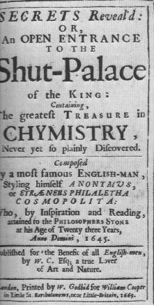

Nous avons souhaité dans les pages qui suivent rédiger quelques notes et indications sur l'un des textes fondateurs de l'Alchimie occidentale. L'occasion nous est ici donnée de dire pour ceux qui auraient encore des doutes quant au but que nous poursuivons qu'il y a plusieurs façons de représenter ou de se représenter l'alchimie ; l'approche peut être :1)- psychologique, voire psychanalytique : c'est la version de Carl Gustav Jung avant tout [Psychologie et Alchimie, Buchet-Chastel, 1970]
2)- mythique : c'est la version qui correspond à celle de Mircea Eliade [Forgerons et alchimistes, Flammarion, Paris, 1956]
3)- religieux ou plus souvent mythique et religieux : c'est la version de ceux qui voient dans les Evangiles, voire l'Ancien Testament, des équivalents du processus alchimique ;
4)- ésotérique : c'est pour beaucoup, nous dirions, la version de référence ou version standard ; ce n'est pas celle que nous défendons...Ce n'est pas dire par là que nous ne sommes pas sensibles à la beauté des allégories voilant les procédés de technique chimique ;
5)- cabalistique : c'est la version de beaucoup des grands Adeptes dont les écrits nous restent, qu'il s'agisse des anciens (Philalèthe, Artephius, B. Valentin, le Cosmopolite, etc.) ou des modernes (Cyliani, Fulcanelli, Canseliet) ; elle peut se révéler apparemment ésotérique -et l'on est renvoyé à l'alinéa 4- ou peut être décryptée dans le but de saisir des techniques chimiques et des tours de main spécifiques ;
6)- opératique : c'est la version qu'adoptent ceux pour lesquels la pratique du laboratoire est l'aboutissement logique des textes -rédigés de manière cabalistique- dont le prétexte n'est autre que de parler, sous forme voilée, de processus opératoires scientifiques et de substances chimiques bien déterminés : c'est l'option que nous défendons à titre personnel ; dans ce type d'approche, les uns privilégient une vision que je qualifierai d'orthodoxe et essayent de trouver (ou de retrouver) des procédés de réelle transmutation ; nous rangerions parmi eux des chercheurs comme Rubellus Petrinus ou Jean-Pascal Percheron qui a obtenu de l'or alchimique par des procédés dits « particuliers » qui s'intègrent dans le cadre de la spagyrie. D'autres privilégient des explications alternatives qui tiennent compte de données qu'ils estiment, à tort ou à raison, rationnelles et c'est aussi cette approche que je revendique ; je peux me tromper...je ne parle en effet que de conjectures, supputées sur la base d'une interprétation personnelle des textes : ainsi que je l'ai dit ailleurs, je ne suis pas chimiste ni expérimentateur et les contingences temporelles ordonnent, hélas, une loi d'airain...On n'a pas le temps de tout faire en une vie...
7)- écologique, en quelque sorte : nous voulons ici parler de l'abord très original d'Armand Barbault qui a relaté son aventure dans l'Or du millième matin [J'ai Lu, 1969] d'où se dégage beaucoup de poésie ;
8)- mélangé ou bigarré enfin, et, finalement, c'est le cas d'un certain nombre de grands textes dont l'Introïtus ; d'autres Adeptes ont joué aussi sur plusiurs tableaux dans leurs textes muets ou pas d'ailleurs [Arnauld de la Chevalerie, B. Valentin, Artephius, Altus, B. Le Trévisan, etc.]
Cet opus magnum a été rédigé par un personnage que l'on rapproche habituellement d'Eirenaeus Philalèthe et dont la véritable identité n'a toujours pas été élucidée. Il se pourrait qu'il s'agisse de George Starkey ; alors il aurait été associé aux activités du cercle de Samuel Hartlib dont nous parlons ailleurs. En tout cas, c'est sans doute Starkey qui révéla au groupe les manuscrits de Philalèthe1. Ce personnage apparaît dans l'histoire de l'alchimie comme l'héritier et le successeur, en un sens, du Cosmopolite. Il semble au premier abord se rattacher aux théosophes et aux Rose-Croix. La nécessité où il était de se cacher devait conduire Philalèthe à prendre successivement plusieurs noms ; Louis Figuier considère que d'après Wedel, il devait se nommer Thomas de Vaughan mais comme on le verra plus bas, rien n'est moins sûr. C'est un écrivain anglais, Urbiger, qui seul se porte garant des prouesses hermétiques accomplies par Philalèthe. Urbiger assure, par exemple, que Charles II fut informé par la voie publique qu'un adepte faisait beaucoup de bruit dans ses Etats par le nombre et l'éclat de ses projections. Il est certain que les historiens s'accordent à dire que la teinture de Philalèthe surpassait en puissance toutes celles qu'on avait vues jusqu'alors, au XVIIe siècle. Un seul grain jeté sur une once de mercure le changeait en or...Ce résultat s'éloigne peu de celui que Van Helmont relate lors de la projection dont il fut le témoin privilégié et par laquelle il fut converti à l'alchimie ; on en a déduit que l'adepte inconnu, que le savant hollandais avait reçu, était Philalèthe lui-même. De semblables événements arrivèrent à la même époque et eurent pour témoins Bérigard de Pise, Gros ou Morgenbesser. Il paraît qu'il se lia avec un de ses compatriotes, George Starkey, dont le nom a survécu grâce au savon de térébenthine...Mais nous venons de voir qu'il s'agissait probablement aussi...de Philalèthe. Notre Adepte gagna l'Amérique, ce séjour étant parfaitement établi par Michel Faustius. Ce médecin philosophe -à qui l'on doit une bonne édition du principal ouvrage de Philalèthe- assure avoir connu plusieurs anglais qu s'étaient trouvés à cette même époque en correspondance avec l'adepte. Enfin, Robert Boyle échangea, semble-t-il, des lettres et fut même en relation d'amitié avec Philalèthe. En 1666, Philalèthe remit un de ses écrits à Jean Lange qui le traduisit. De tous ses ouvrages, le plus précieux est l'Introïtus, qui nous dévoile l'homme autant que l'Adepte. Par parenthèse, il est incroyable de voir à quelles maladresses d'interprétations se livre Louis Figuier dans son Alchimie et les alchimistes[il confond des textes authentiquement hermétiques avec la vie de Philalèthe et lui prête des sentiments d'honnêteté de moeurs semblables à ceux de Nicolas Flamel, alors que nous savons que N. Flamel, tout au contraire, était certainement un usurier des plus criticables...sans compter que les textes qui lui sont attribués sont pafaitement apocryphes, cf. notre commentaire des Figures Hiéroglyphiques].
Il est clair que pour Philalèthe le processus alchimique devait se réaliser au sein de la matière et non dans l'esprit ou l'âme humaine. On doit savoir qu'il devint l'un des auteurs de chevet d'Isaac Newton, ce qui laisse réveur quand on a pris la mesure des facettes de ce génie, à mettre pour nous au même plan qu'Aristarque de Samos ou Albert Einstein. Sur son chevet, Newton a pu donc lire, à loisir, ces Secrets révélés, ou une Entrée Ouverte au Palais fermé du Roi. C'est William Cooper qui publia la version anglaise des Secrets Révélés en 1669 et qui commenta la version latine, laquelle avait été publiée en 1660 par John Langius ; le titre exact est :
_______________
chapitre
I : préface - De la nécessité du Mercure
des Sages pour l'Oeuvre de l'Élixir
chapitre
II : Les principes qui composent le Mercure des Sages
chapitre
III : De l'acier des Sages
chapitre
IV : De l'Aimant des Sages
chapitre
V : Du Chaos des Sages
chapitre
VI : L'Air des Sages
Chapitre
VII : De la première opération de la Préparation
du Mercure Philosophique par les Aigles volantes
Chapitre
VIII : Du travail et de l'ennui de la première préparation
________________

FIGURE I
lexique :
chapitre 1 :chimère - réincrudation - baigneur - Gaïa - Rhéa - lin - Clef VIII - salamandre - Hepar sulphuris - Winterthur (poële alchimique de)
chapitre 2 : Servus fugitivus - dragon igné - coupe - Chevalier (Sabine Stuart de) - Holmat - Lune (crachat de) - Terre (Beurre de) - Rosée (Graisse de) - Offerus - Terre (des feuilles) - Autonoe - Azoth - Zadith (Senior) - Atalante - Hippoménês - Pont-Euxin - caducée - pétase - coq - cerf -pélerin - Melissa -
chapitre 3 : Pernety (Don) - Acier - Dodone - airain (vases d') - Chalybs - Amon - brassard - zinc - glais (fleurs de) - Aurore (l') - Néphélé - Ariès - Aphrodite - Jésus (pierre de) - antimoine - bismuth - Zinck - Lion vert - Eau pontique - romarin - grenadiers - cierges verts - Marthe - sable - silice - Grimaldi (Copponay Denis de) - salpêtre (des Sages) - alkali fixe - Âme - Esprit - Corps - Jacob - Annonciation (l') - Jésus (petit) - crépuscule - Lucifer - Délos - âne - couverture - Linthaut (Henri de) - Lisieux (salamandre de) - mortier (homme au) - pourpoint - condition (homme de) - van (mystique) - Eleazar (Abraham) - digamma - coquille - albâtre (des Sages) - étoile - fleur - alkali fixe - potasse - Ops - Cybèle - hydrargyre (philosophique) - cinabre - dauphin -
chapitre 4 : rémora - Chalybes - caerula - bourdon - gemmes - chêne - pilote (de l'onde vive) (1) - Soufre (nature du) - Winterthur (poêle alchimique de) - Newton (Isaac) - poids (de nature) - amalgamations - étain - plomb - bismuth - médiation - Cyrano Bergerac (De) - gaulois - pôle - blanc - rouge - Limojon (Saint Didier de) - semence métallique - cheveux - sirène - Clef I - efflorescence - herbe - Strongyle - Arès - arcanum - or (enté) - Argo (vaisseau) - fou (de l'oeuvre) - Ripley scrowles - Douze Portes - tarot - Théâtre (de l'Astronomie terrestre) - Notre-Dame de Paris - Strongylion - torse - Aliboron -
chapitre 5 : Lavinius - réincrudation - Arcanum - venin - limbes - Chaos - vieillard - régule étoilé (d'antimoine) - Philalèthe (Expériences de) - Diane - Péchiney - Junon - grenade -Limojon - Cronos - ludus puerorum - Vénus - Terre - limaçon - Fontenay - Pégase - Chaos() - dragon - rédemption (trois flèches) - équerre - Cybèle - réincrudation -
chapitre 6 : larron - colombes() - aer - salpêtre() - alkali fixe - Armoniac (sel) - bélier - Arès - Ariès - chêne (rouvre) - stibine - plomb1 - calcaire - Terre - ange - Esprit1 - rosée - alkali2 - galle - kermès - Thémis - chêne (robur) - chêne (yeuse) - lien (du Mercure) - chaos - Lucifer - salpêtre2 - agent (premier) - Ariès2 - galle2 - kermès2 - chêne3 - Zeus (généalogie de) - Zeus2 - Salomon - Jésus (pierre de) - gypse - alkali fixe - chaux - Tartare - Typhée - Héra - Athéna - Héphaïstos - Téthys - Coignet (pierre du) - Nuit (Nox) - Arcanum - Ficin (Marsile) - Hermeticum - Festugière - Kelly (Edouard) - Lune - vieillard - unique - Ame - Corps - Esprit - X (lettre) - Cassius - pélerin - corps fixe - Balinous - tartre - coquille - canal (tuiles) - salpêtre() - P (lettre) - Ino - Arès2 - alun - gypse - Aphrodite - Artémis - grenades - cygne - écume - torse - Omphalos - réincrudation - moyen (milieu) - chimie - alun2 - pyrites - ammoniaque - écorce - burin (caelum) - marbre - alun3 - alunite - sulfate de potassium - sulfate d'alumine - pyrophore - Soufre blanc - Arcanum duplicatum - Soufre (principe) - Arsenic - Flamel - Lune3 - Corascène - chien - colombes (deux) - Khorassan - Apollon (Phaebius) - Chevreul (Eugène) - réincrudation2 - faux - fèces - chrome - Sirius - licorne - cerf - Vauquelin - chrome (sesquioxyde) - violet - Lune3 - rubis - alun4 - carbonate - tartre2 - salpêtre3 - étable - salpêtre4 - Arès2 - Zeus - larron - Zéphyre - ailes - Diane - Piccolpassi - pierre - Favonius - Vénus - lis - Tentzel - Dodone (oracle de) - sable - Compost - Mélos - silice - isomère - Artémis - bouclier - chien2 - chapeau - phrygien (bonnet) - réincrudation - Aphrodite2 - écume2 - Caput - colcothar - Toison d'or - Chrysomelle (bélier) - étain - plomb (1,2) - Vitruve - sarment - Clef XII - galène - matte -
dont on trouvera à la FIGURE I le frontispice. Il semble que Cooper se soit servi d'un texte plus complet que celui qu'a utilisé Langius. Il est donc possible que la copie de Cooper ait pu être exécutée directement d'après le manuscrit de l'auteur. L'identité exacte de Philalèthe reste mystérieuse. On sait qu'il fut en rapport avec Robert Boyle qui était le plus grand chimiste anglais de l'époque. A un moment, on a pensé qu'il s'agissait de John Winthrop II (1606-1676), premier gouverneur du Connecticut. Une autre hypothèse ne paraît guère plausible : Philalèthe aurait été le Dr Robert Child (1613-1654)...Je renvoie le lecteur à la section que je consacre à certains travaux alchimiques d'Isaac Newton. Jacques Sadoul, dans son remarquable Trésor des Alchimistes, consacre un chapitre entier au Véritable Philalèthe. Il cite un texte de Lenglet du Fresnoy qui le fait naître en Angleterre en l'an 1612 en se basant sur son âge présumé, 33 ans, lorsqu'il rédiga l'Introïtus. En fait, rien de sûr puisque 33 correspond à un nombre symbolique se référant à la durée de l'ouvre. Cyliani affirme aussi avoir passé 30 ans de sa vie avant de voir le signe constellé qui signe l'oeuvre au rouge. Il discute ensuite de l'hypothèse selon laquelle l'Adepte pourrait être Thomas de Vaughan ; Betty J. Teeter Dobbs semble d'avis différent : Thomas Vaughan était un second Philalèthe prénommé Eugenius.1. On pourra consulter à ce sujet George Starkey, physicien et chimiste de Ronald Sterne Wilkinson, ambix II, 121-152, 1963
2. Consultez L'Alchimie de Lucien Gérardin, Bibliothèque de l'Irrationnel, Culture, Art, Loisirs, Paris, 1972